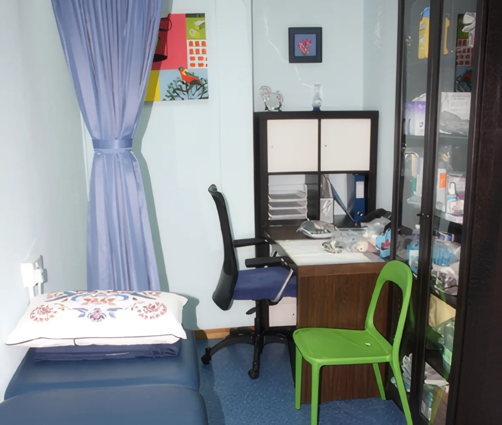

About us
Health Outreach Programme Pte Ltd
Our core strength is affordable on-site health screening, with intervention and recommendations, for working people, mainly at corporate level. A basic screening needs minimal cost, time and space, so it fits into a normal working day.



Part of Singapore's workplace health programme
The Health Promotion Board runs a Workplace Health Promotion (WHP) programme to build a healthier workforce, lower health costs and improve productivity. We have been listed under the Health Promotion Board as one of its appointed service providers since 2005, an established screening provider with over 10 years of experience.
To date we have screened more than 150,000 patients and given health talks to top ministries and leading enterprises.
Along the way
- 2005Listed under the Health Promotion Board as an appointed service provider.
- 2010Health Outreach Clinic opens at Far East Shopping Centre, Orchard Road, with a wider range of health screening services and a way to reach the general public about the early detection of chronic diseases.
- 150,000+People screened through our health screening initiatives so far.
Who we screen
Over the years we have built the know-how a smooth on-site screening needs, and our clients keep coming back:
- Medical institutions
- Government ministries
- Private organisations
- Schools
Results you can rely on
We are serious about quality results and reliable support after the screening. That's why we chose Quest Laboratories, the largest independent private pathology lab in Singapore, and why we offer consultation support to help every participant understand their results.
Quest screens about 5,000 patients a day and runs over 10 million tests a year, for government agencies including the Ministry of Defence, the Health Sciences Authority, Singapore Civil Defence, National University Hospital and KK Women's and Children's Hospital, and for non-profits such as the National Kidney Foundation. It was the first private laboratory in Singapore to achieve ISO 15189 SINGLAS accreditation.
Reaching out to a better future for mankind.
Health Outreach Programme
Talk to us about your staff.
Call the hotline for any enquiry or a free consultation. Main office: Mon–Fri, 8.30am–5.30pm.
+65 6746 6033